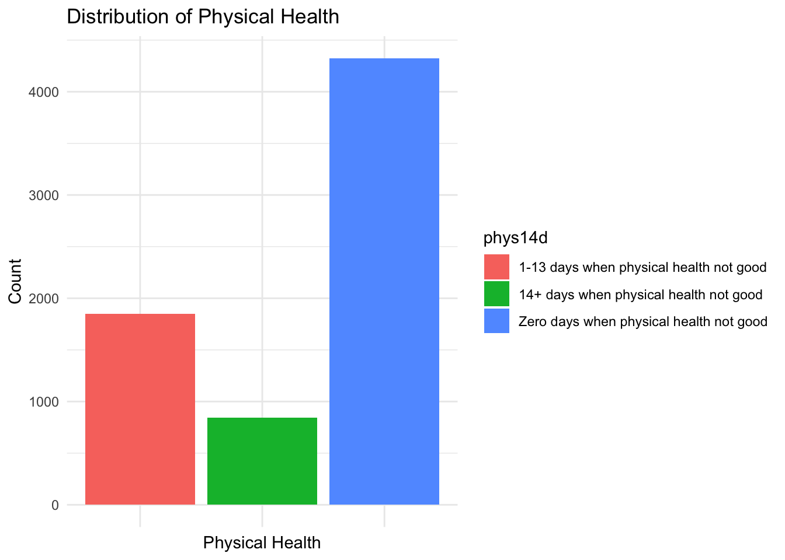
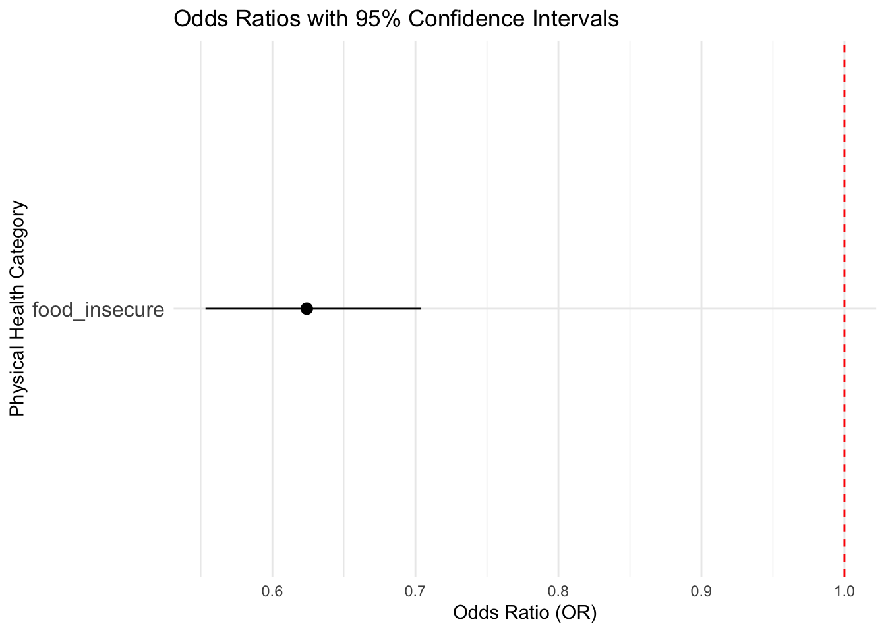

Data Analysis
Data Importing and Cleaning
Visit report for detailed steps on how the data is cleaned.
brfss_22 = read_csv("NYSDOH_BRFSS_Survey_Data_2022.csv")|>
janitor::clean_names()
cleaned_df =
brfss_22 |>
filter(complete.cases(imprace, educag, incomg1, strsmeal_sa, genhlth, diabete4, ment14d, phys14d),
!str_detect(genhlth, "Not Sure|Refused"),
!str_detect(strsmeal_sa, "Not"))|>
select(imprace, educag, incomg1, strsmeal_sa, genhlth, diabete4, ment14d, phys14d)
cleaned_df =
cleaned_df |>
mutate(
income = case_when(
incomg1 %in% c("Less than $15,000", "$25,000 to < $35,000", "$35,000 to < $50,000") ~"<50,000",
incomg1 == "$50,000 to < $100,000" ~ "50,000 ~ 100,000",
incomg1 %in% c ("$100,000 to < $200,000" , "$200,000 or more") ~ ">100,000",
TRUE ~ NA_character_),
education = case_when(
educag == "Did not graduate High School" ~ "Less than high school",
educag == "Graduated High School" ~ "High school or GED",
educag == "Attended College or Technical School" ~ "Some post-high school",
educag == "Graduated from College or Technical School" ~ "College graduate"
),
food_insecure = case_when(
strsmeal_sa %in% c("Rarely","Sometimes","Usually", "Always") ~ 1,
strsmeal_sa == "Never" ~ 0),
health = case_when(
genhlth %in% c("Good", "Very good", "Excellent") ~ 1,
genhlth %in% c("Fair", "Poor") ~ 0),
physical_health = case_when(
phys14d %in% c("Zero days when physical health not good") ~ 1,
phys14d %in% c("1-13 days when physical health not good", "14+ days when physical health not good") ~ 0),
mental_health = case_when(
ment14d %in% c("Zero days when mental health not good") ~ 1,
ment14d %in% c("1-13 days when mental health not good", "14+ days when physical health not good") ~ 0),
diabete = case_when(
diabete4 %in% c("No") ~0,
diabete4%in% c("Yes") ~ 1)
)|>
filter(!is.na(income), !is.na(education), !is.na(physical_health), !is.na(mental_health), !is.na(diabete))|>
select(-incomg1, -educag, -strsmeal_sa, -genhlth, -phys14d, -ment14d, -diabete4)We are interested in understanding the associations between food insecurity and its potential impacts on various health outcomes, including general health, physical health, mental health, and diabetes.
Key Health Factors Distribution
General Health
cleaned_df |>
ggplot(aes(x = factor(health), fill = factor(health))) +
geom_bar() +
labs(
title = "Bar Plot of Health",
x = "Health Status",
y = "Count",
fill = "Health"
) +
scale_fill_manual(values = c("0" = "pink", "1" = "lightblue"))+
theme_minimal()
The plot demonstrates levels of general health distribution. The majority of individuals are in the “Good” category (1), as reflected by the much taller blue bar. Conversely, fewer individuals are categorized as having “Poor” (0), corresponding to the shorter pink bar. This indicates a predominantly healthy population in the dataset.
Physical Health
cleaned_df |>
ggplot(aes(x = "", fill = factor(physical_health))) +
geom_bar(width = 1, stat = "count") +
coord_polar("y") +
labs(
title = "Pie Chart of Physical Health",
fill = "Physical Health"
) +
scale_fill_manual(
values = c("0" = "tomato", "1" = "forestgreen"),
labels = c("Unhealthy (1+ days bad)", "Healthy (0 days bad)")
) +
theme_void()The green segment corresponds to individuals who reported having 0 days of poor physical health, categorized as “Healthy”. The red segment corresponds to individuals who reported having 1 or more days of poor physical health, categorized as “Unhealthy”. The chart highlights that the majority of the population maintains good physical health, with only a smaller fraction reporting significant physical health challenges.
Mental Health
cleaned_df |>
ggplot(aes(x = factor(mental_health), fill = factor(mental_health))) +
geom_bar() +
labs(
title = "Bar Plot of Mental Health",
x = "Mental Health Status",
y = "Count",
fill = "Mental Health"
) +
scale_fill_manual(values = c("0" = viridis(2)[1], "1" = viridis(2)[2]))+
theme_minimal()
The yellow bar (healthy mental health) is taller than the purple bar, indicating the majority of individuals reported 0 days of poor mental health.
Diabetes
cleaned_df |>
ggplot(aes(x = "", fill = factor(diabete))) +
geom_bar(width = 1, stat = "count") +
coord_polar("y") +
labs(
title = "Pie Chart of Diabetes",
fill = "Diabetes"
) +
scale_fill_manual(
values = c("0" = "skyblue", "1" = "purple"),
labels = c("No Diabetes", "Has Diabetes")
) +
theme_void()
The chart clearly shows a significant imbalance, with a much larger proportion of participants being free from diabetes compared to those who have diabetes. This highlights that the prevalence of diabetes in this dataset is relatively low.
General Health
Odds Ratio
logit_health =
glm(health ~ food_insecure, data = cleaned_df, family = binomial)
exp_health = exp(cbind(OR=coef(logit_health),confint(logit_health)))
knitr::kable(exp_health)| OR | 2.5 % | 97.5 % | |
|---|---|---|---|
| (Intercept) | 11.0338462 | 9.866898 | 12.3831763 |
| food_insecure | 0.4704308 | 0.394936 | 0.5608241 |
Confidence Interval
ci_general = as.data.frame(exp_health)
ci_general =
ci_general |>
rownames_to_column("Variable") |>
filter(Variable != "(Intercept)") |>
ggplot(aes(y = Variable, x = OR, xmin = `2.5 %`, xmax = `97.5 %`)) +
geom_pointrange() +
geom_vline(xintercept = 1, linetype = "dashed", color = "red") +
labs(
title = "Odds Ratios with 95% Confidence Intervals",
x = "Odds Ratio (OR)",
y = "General Health Category"
) +
theme_minimal() +
theme(axis.text.y = element_text(size = 12))
ci_general
OR interpretation: Individuals who are food insecure have approximately 53% lower odds of having good health compared to those who are not food insecure, holding all else constant. Because this result shows that food insecure is a potential risk factor for general health of individuals, we want to further explore the association between food insecure with physical health and mental health, separately.
Physical Health
Odds Ratio
logit_physical =
glm(physical_health ~ food_insecure, data = cleaned_df, family = binomial)
exp_physical = exp(cbind(OR=coef(logit_physical),confint(logit_physical)))
knitr::kable(exp_physical)| OR | 2.5 % | 97.5 % | |
|---|---|---|---|
| (Intercept) | 2.242952 | 2.0963912 | 2.4011736 |
| food_insecure | 0.624043 | 0.5532018 | 0.7040903 |
Confidence Interval
ci_physical = as.data.frame(exp_physical)
ci_physical =
ci_physical |>
rownames_to_column("Variable") |>
filter(Variable != "(Intercept)") |>
ggplot(aes(y = Variable, x = OR, xmin = `2.5 %`, xmax = `97.5 %`)) +
geom_pointrange() +
geom_vline(xintercept = 1, linetype = "dashed", color = "red") +
labs(
title = "Odds Ratios with 95% Confidence Intervals",
x = "Odds Ratio (OR)",
y = "Physical Health Category"
) +
theme_minimal() +
theme(axis.text.y = element_text(size = 12))
ci_physical
OR interpretation: Individuals who are food insecure have approximately 37.7% lower odds of having good physical health compared to those who are not food insecure, holding all else constant. Therefore, food insecure is associated with physical health.
Mental Health
Odds Ratio
logit_mental =
glm(mental_health ~ food_insecure, data = cleaned_df, family = binomial)
exp_mental = exp(cbind(OR=coef(logit_mental),confint(logit_mental)))
knitr::kable(exp_mental)| OR | 2.5 % | 97.5 % | |
|---|---|---|---|
| (Intercept) | 2.7000946 | 2.517056 | 2.8986581 |
| food_insecure | 0.5012974 | 0.443774 | 0.5663188 |
Confidence Interval
ci_mental = as.data.frame(exp_mental)
ci_mental =
ci_mental |>
rownames_to_column("Variable") |>
filter(Variable != "(Intercept)") |>
ggplot(aes(y = Variable, x = OR, xmin = `2.5 %`, xmax = `97.5 %`)) +
geom_pointrange() +
geom_vline(xintercept = 1, linetype = "dashed", color = "red") +
labs(
title = "Odds Ratios with 95% Confidence Intervals",
x = "Odds Ratio (OR)",
y = "Physical Health Category"
) +
theme_minimal() +
theme(axis.text.y = element_text(size = 12))
ci_mentalOR interpretation: Individuals who are food insecure have approximately 49.9% lower odds of having good mental health compared to those who are not food insecure, holding all else constant. Therefore, food insecure is associated with mental health.
Results show that food insecure have impacts on both individuals’ physical and mental health, separately. Then we move on to explore how food insecure affects diabetes which is a main outcome of malnutrition.
Diabetes
Odds Ratio
logit_diabete =
glm(diabete ~ food_insecure, data = cleaned_df, family = binomial)
exp_diabete = exp(cbind(OR=coef(logit_diabete),confint(logit_diabete)))
knitr::kable(exp_diabete)| OR | 2.5 % | 97.5 % | |
|---|---|---|---|
| (Intercept) | 0.1187071 | 0.1070728 | 0.1312475 |
| food_insecure | 1.2739769 | 1.0652717 | 1.5196077 |
Confidence Interval
ci_diabete = as.data.frame(exp_diabete)
ci_diabete =
ci_diabete |>
rownames_to_column("Variable") |>
filter(Variable != "(Intercept)") |>
ggplot(aes(y = Variable, x = OR, xmin = `2.5 %`, xmax = `97.5 %`)) +
geom_pointrange() +
geom_vline(xintercept = 1, linetype = "dashed", color = "red") +
labs(
title = "Odds Ratios with 95% Confidence Intervals",
x = "Odds Ratio (OR)",
y = "Physical Health Category"
) +
theme_minimal() +
theme(axis.text.y = element_text(size = 12))
ci_diabeteOR interpretation: Individuals who are food insecure have approximately 27.4% higher odds of having diabetes compared to those who are not food insecure, holding all else constant. Food insecure is associated with diabetes.